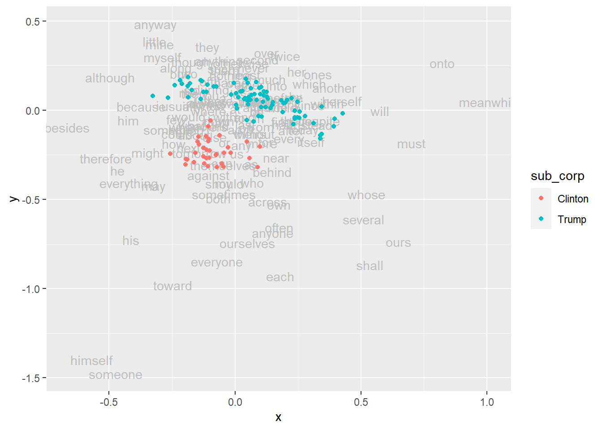
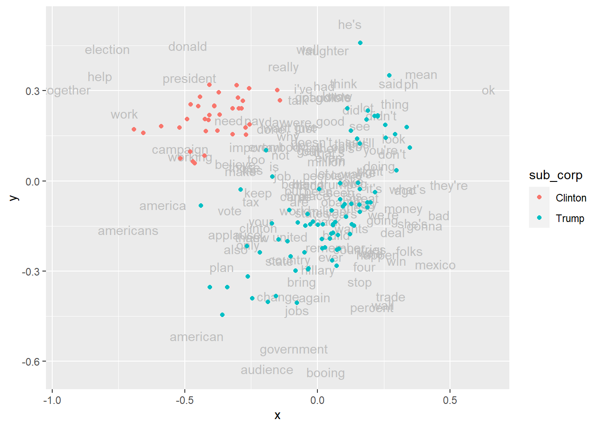
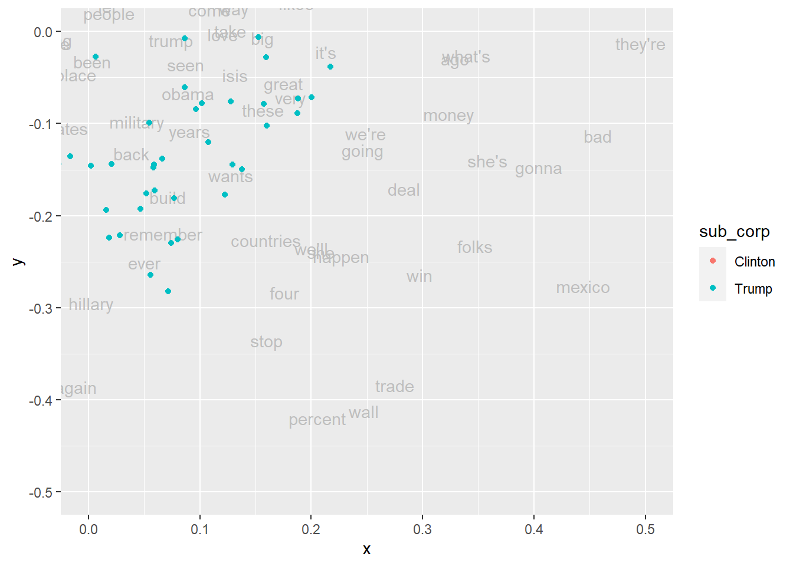
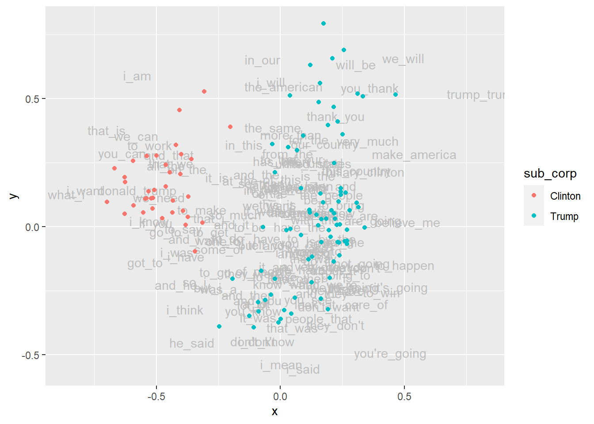
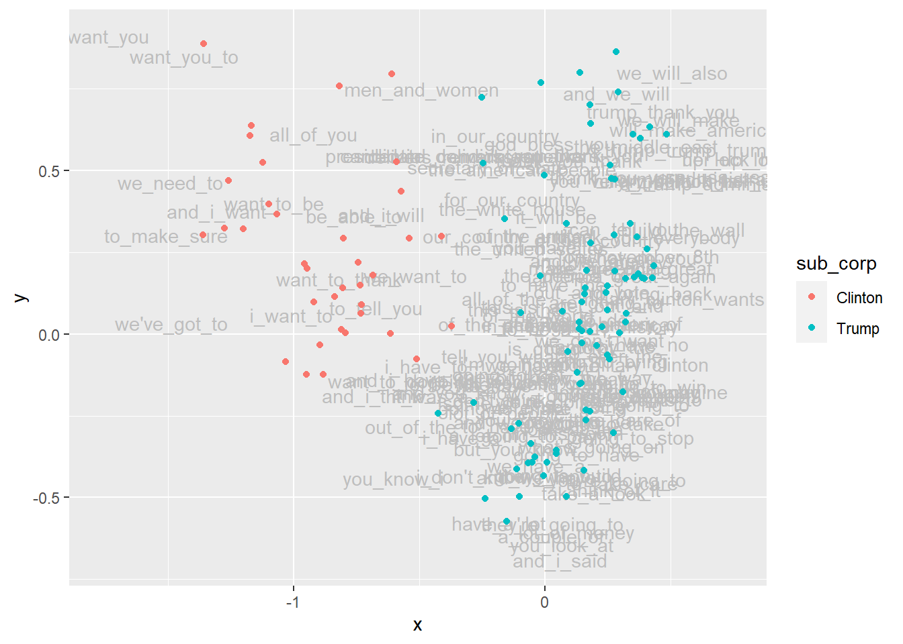

library(tidyverse)
library(mclm)
library(kableExtra)CA applied to the Trump-Clinton speeches
Setup
This document illustrates how to use correspondence analysis (CA) to investigate the degree to which the Trump speeches and the Clinton speeches in the clinton_trump corpus are different from, or similar to, one another. The approach boils down to adopting a bird’s-eye perspective, looking at the broad picture we get if we aggregate over a wide range of features of the speeches. More specifically, we compare the frequencies of a wide range of features in the documents. A major advantage of the technique is that it allows us to see how similar or different the documents are when taking into account the full range of features, but at the same time to also see how similarly or differently the features are distributed over the documents, and, importantly, which features or groups of features are the ones that account most for the most important dissimilarities between the documents.
Activate packages
We start by activating the R packages we will use. Note that activating {mclm} automatically also activates the package {ca} which it relies on. This is the reason why we do not have to explicitly activate {ca}, even though we will conduct correspondence analysis using the function ca::ca(). We’ll also load {kableExtra} to create some tables.
Collecte the corpus filenames
First, we collect the names of the corpus files and store them in an object called fnames. From this we also derive the short filenames (stored in short_fnames) and a character vector with, for each filename, the subcorpus (stored in sub_corp).
# retrieve list of corpus file names
fnames <- get_fnames(file.path(corpus_folder, "clinton_trump")) %>%
print()Filename collection of length 118
filename
-------------------------------------------------------
1 _corpora/clinton_trump/Clinton/Clinton_2016-07-28.txt
2 _corpora/clinton_trump/Clinton/Clinton_2016-07-29.txt
3 _corpora/clinton_trump/Clinton/Clinton_2016-08-01.txt
4 _corpora/clinton_trump/Clinton/Clinton_2016-08-05.txt
5 _corpora/clinton_trump/Clinton/Clinton_2016-08-10.txt
6 _corpora/clinton_trump/Clinton/Clinton_2016-08-11.txt
7 _corpora/clinton_trump/Clinton/Clinton_2016-08-15.txt
8 _corpora/clinton_trump/Clinton/Clinton_2016-08-16.txt
9 _corpora/clinton_trump/Clinton/Clinton_2016-08-17.txt
10 _corpora/clinton_trump/Clinton/Clinton_2016-08-25.txt
11 _corpora/clinton_trump/Clinton/Clinton_2016-08-31.txt
12 _corpora/clinton_trump/Clinton/Clinton_2016-09-05-A.txt
13 _corpora/clinton_trump/Clinton/Clinton_2016-09-05-B.txt
14 _corpora/clinton_trump/Clinton/Clinton_2016-09-06.txt
15 _corpora/clinton_trump/Clinton/Clinton_2016-09-08-A.txt
16 _corpora/clinton_trump/Clinton/Clinton_2016-09-08-B.txt
17 _corpora/clinton_trump/Clinton/Clinton_2016-09-08-C.txt
18 _corpora/clinton_trump/Clinton/Clinton_2016-09-29.txt
19 _corpora/clinton_trump/Clinton/Clinton_2016-09-30.txt
20 _corpora/clinton_trump/Clinton/Clinton_2016-10-03.txt
...short_fnames <- short_names(fnames) %>%
print()Filename collection of length 118
filename
--------------------
1 Clinton_2016-07-28
2 Clinton_2016-07-29
3 Clinton_2016-08-01
4 Clinton_2016-08-05
5 Clinton_2016-08-10
6 Clinton_2016-08-11
7 Clinton_2016-08-15
8 Clinton_2016-08-16
9 Clinton_2016-08-17
10 Clinton_2016-08-25
11 Clinton_2016-08-31
12 Clinton_2016-09-05-A
13 Clinton_2016-09-05-B
14 Clinton_2016-09-06
15 Clinton_2016-09-08-A
16 Clinton_2016-09-08-B
17 Clinton_2016-09-08-C
18 Clinton_2016-09-29
19 Clinton_2016-09-30
20 Clinton_2016-10-03
...sub_corp <- fnames %>%
re_retrieve_first("/clinton_trump/([^/]+)", requested_group = 1) %>%
print() [1] "Clinton" "Clinton" "Clinton" "Clinton" "Clinton" "Clinton" "Clinton"
[8] "Clinton" "Clinton" "Clinton" "Clinton" "Clinton" "Clinton" "Clinton"
[15] "Clinton" "Clinton" "Clinton" "Clinton" "Clinton" "Clinton" "Clinton"
[22] "Clinton" "Clinton" "Clinton" "Clinton" "Clinton" "Clinton" "Clinton"
[29] "Clinton" "Clinton" "Clinton" "Clinton" "Clinton" "Clinton" "Clinton"
[36] "Clinton" "Trump" "Trump" "Trump" "Trump" "Trump" "Trump"
[43] "Trump" "Trump" "Trump" "Trump" "Trump" "Trump" "Trump"
[50] "Trump" "Trump" "Trump" "Trump" "Trump" "Trump" "Trump"
[57] "Trump" "Trump" "Trump" "Trump" "Trump" "Trump" "Trump"
[64] "Trump" "Trump" "Trump" "Trump" "Trump" "Trump" "Trump"
[71] "Trump" "Trump" "Trump" "Trump" "Trump" "Trump" "Trump"
[78] "Trump" "Trump" "Trump" "Trump" "Trump" "Trump" "Trump"
[85] "Trump" "Trump" "Trump" "Trump" "Trump" "Trump" "Trump"
[92] "Trump" "Trump" "Trump" "Trump" "Trump" "Trump" "Trump"
[99] "Trump" "Trump" "Trump" "Trump" "Trump" "Trump" "Trump"
[106] "Trump" "Trump" "Trump" "Trump" "Trump" "Trump" "Trump"
[113] "Trump" "Trump" "Trump" "Trump" "Trump" "Trump" A first CA: based on function words
In a first approach, we use so-called function words as features (i.e. closed word classes such as pronouns, prepositions, auxiliaries, …, as opposed to so-called content words such as nouns, verbs, adjectives, …). In the field of stylometry, which is devoted to the quantitative study of linguistics style (e.g. in support of authorship attribution), it has long been established that function words are a powerful instrument in support of the identification of typical or even unique characteristics of the style of a specific author (or group of authors). Zooming in on function words steers the analysis away from differences related to topic/content and foregrounds differences related to style. Using function words by no means is the only way to do this (alternatives are (i) zooming in on longer n-grams, e.g. 3-grams, 4-grams, or, (ii) if the information is available, looking at the frequencies of POS tags or POS tag n-grams, or, (iii) looking at derived features such as lexical density, word length, sentence length, etc.).
Specifying the features
We start by reading the names of the features for this analysis from the file function-words.txt and storing then into an object called features.
features <- read_types("assets/ca-trump-clinton/function-words.txt") %>%
print()Type collection of length 149
type
-------
1 about
2 across
3 against
4 along
5 around
6 at
7 behind
8 beside
9 besides
10 by
11 despite
12 down
13 during
14 for
15 from
16 in
17 inside
18 into
19 near
20 of
...The object features now contains about 149 function words.
Building the file-by-feature matrix
Now, we are ready to build the matrix that we will apply the correspondence analysis to. Eventually, this matrix will be of the data type matrix with as its rows the files and as its columns the features, and in the cells the absolute frequencies of the features in the files.
A convenient way in R to incrementally build that data set, file by file, is to first store the data in a data frame with as its rows the features and as its columns the files. This is convenient, because we will ‘grow’ the data set file by file, and adding new columns to a data frame is a straigthforward and (in most situations sufficiently) time- and memory-efficient procedure in R. So that’s how we will go about. Once we have all the data, we will, as a final step, turn the data frame into the data type matrix and then transpose the matrix in order to make the files the rows and the features the columns.
d <- data.frame(row.names = features)
for (i in seq_along(fnames)) {
fname <- fnames[[i]] # identify i-th filename
short_fname <- short_fnames[[i]] # identify i-th short filename
flist <- freqlist(fname) # build frequency list for file
flist <- flist[features] # filter that list to just features
d[[short_fname]] <- flist # add column to d named after filename
}
d <- d %>%
as.matrix() %>%
t() %>%
drop_empty_rc()The top-left part of the resulting matrix (first ten rows, first ten columns) looks like this:
kbl(d[1:10, 1:10])| about | across | against | along | around | at | behind | besides | by | despite | |
|---|---|---|---|---|---|---|---|---|---|---|
| Clinton_2016-07-28 | 11 | 4 | 3 | 1 | 3 | 26 | 1 | 0 | 20 | 0 |
| Clinton_2016-07-29 | 24 | 4 | 0 | 0 | 2 | 8 | 1 | 0 | 7 | 0 |
| Clinton_2016-08-01 | 7 | 3 | 0 | 0 | 1 | 3 | 0 | 0 | 2 | 0 |
| Clinton_2016-08-05 | 22 | 5 | 3 | 1 | 5 | 30 | 4 | 0 | 17 | 0 |
| Clinton_2016-08-10 | 19 | 3 | 0 | 1 | 2 | 5 | 0 | 0 | 9 | 0 |
| Clinton_2016-08-11 | 18 | 10 | 4 | 1 | 3 | 23 | 2 | 0 | 17 | 0 |
| Clinton_2016-08-15 | 41 | 4 | 6 | 2 | 5 | 30 | 0 | 0 | 18 | 0 |
| Clinton_2016-08-16 | 16 | 5 | 0 | 1 | 1 | 7 | 0 | 0 | 4 | 0 |
| Clinton_2016-08-17 | 34 | 4 | 1 | 0 | 0 | 19 | 0 | 0 | 7 | 0 |
| Clinton_2016-08-25 | 17 | 2 | 3 | 0 | 2 | 9 | 0 | 0 | 11 | 0 |
Running correspondence analysis
Then we run the actual correspondence analysis and store the result in an object called d_ca. For reasons of brevity, we will skip the inspection of the summary report of the analysis, which we would normally do with summary(d_ca).
d_ca <- ca(d)
# summary(d_ca)Biplot
Next, we build the biplot, with color indication the subcorpus of each file. First, we prepare the data needed for the plot:
text_coord <- row_pcoord(d_ca) # coordinates of texts
word_coord <- col_pcoord(d_ca) # coordinates of function words
words_df <- tibble(
word = colnames(d),
x = word_coord[, 1],
y = word_coord[, 2])
texts_df <- tibble(
text = short_fnames,
sub_corp = sub_corp,
x = text_coord[, 1],
y = text_coord[, 2])Then we build the plot:
ggplot(words_df, aes(x = x, y = y)) +
geom_text(aes(label = word), col = "gray") +
geom_point(data = texts_df, aes(x = x, y = y, col = sub_corp))
Typical Clinton features vs. typical Trump features
Since the dimension that sets apart the Clinton speeches (top) most clearly from the Trump speeches (bottom) is the second dimension (y-axis), we may want to inspect the features that occupy extreme positions on the y-axis (and that hence contribute importantly to the y-axis).
# Top of y-axis
words_df %>%
arrange(desc(y)) %>%
head(20) %>%
kbl() %>%
kable_paper()| word | x | y |
|---|---|---|
| anyway | -0.3155405 | 0.4838693 |
| little | -0.3201301 | 0.3855589 |
| mine | -0.3006109 | 0.3704244 |
| they | -0.1100616 | 0.3573612 |
| over | 0.1258590 | 0.3230058 |
| twice | 0.2008103 | 0.3066290 |
| myself | -0.2886836 | 0.2990135 |
| second | 0.0895100 | 0.2862035 |
| anything | -0.0647732 | 0.2780591 |
| though | -0.1755457 | 0.2731911 |
| otherwise | 0.0231480 | 0.2654870 |
| onto | 0.8234335 | 0.2650169 |
| along | -0.2338846 | 0.2418416 |
| never | 0.0738386 | 0.2399916 |
| such | -0.0547490 | 0.2364184 |
| them | -0.0402881 | 0.2264511 |
| her | 0.2439963 | 0.2191622 |
| two | -0.1872550 | 0.2072901 |
| but | -0.2232874 | 0.2066175 |
| ones | 0.3295460 | 0.2038937 |
# Bottom of y-axis
words_df %>%
arrange(y) %>%
head(20) %>%
kbl() %>%
kable_paper()| word | x | y |
|---|---|---|
| someone | -0.4735705 | -1.4773000 |
| himself | -0.5698533 | -1.3988530 |
| toward | -0.2463907 | -0.9793770 |
| each | 0.1809908 | -0.9297508 |
| shall | 0.5359764 | -0.8667748 |
| everyone | -0.0728205 | -0.8459891 |
| ourselves | 0.0495236 | -0.7420725 |
| ours | 0.6504992 | -0.7361496 |
| his | -0.4138206 | -0.7257485 |
| anyone | 0.1498842 | -0.6868008 |
| often | 0.1759930 | -0.6558481 |
| several | 0.5116921 | -0.6098689 |
| own | 0.1746523 | -0.5274312 |
| across | 0.1301973 | -0.5099514 |
| both | -0.0676852 | -0.4914948 |
| sometimes | -0.0428908 | -0.4700575 |
| whose | 0.5228517 | -0.4698125 |
| may | -0.3249036 | -0.4224336 |
| should | -0.0410605 | -0.4095433 |
| my | -0.0467555 | -0.4069630 |
A second CA: based on high frequency content words
In a second approach, we look at content words instead. Obviously, then, topic will start playing an important role (although some stylistic differences may still be present in the patterns that emerge). So the nature of this analysis is very different, and it serves different purposes. Even so, it is a legitimate question whether the Clinton speeches and the Trump speeches turn out to be as clearly separated as in the previous analysis if we zoom in on the content words. Also, we can inspect which (groups of) content words will emerge as the ones that are most characteristic of the different areas in the map that will emerge.
Specifying the features
Technically, the only difference, compared to the previous analysis, is how we define the features. This time, we build a complete frequency list of the whole corpus, we then remove a number of stop words (mostly function words, but also some undesired types such as 000 and --), and finally we treat the top 150 (i.e. the 150 highest frequency items) of the remaining items as our features. The number 150 is an arbitrary choice. We chose it so we could make a fair comparison to the performance of the analysis that used function words.
stop_list <- read_types("assets/ca-trump-clinton/stop_list.txt") %>%
print()Type collection of length 154
type
-------
1 000
2 about
3 across
4 against
5 along
6 around
7 at
8 behind
9 beside
10 besides
11 by
12 despite
13 down
14 during
15 for
16 from
17 in
18 inside
19 into
20 near
...features <- freqlist(fnames) %>%
drop_types(stop_list) %>%
keep_bool(ranks(.) <= 150) %>%
as_types() %>%
print()Type collection of length 150
type
---------
1 again
2 ago
3 also
4 america
5 american
6 americans
7 applause
8 are
9 audience
10 back
11 bad
12 been
13 being
14 believe
15 better
16 big
17 booing
18 bring
19 build
20 campaign
...Next steps and plot
The next steps, all the way up to the creation of the plot, are completely analogous to the previous analysis.
# build file by feature frequency matrix
d <- data.frame(row.names = features)
for (i in seq_along(fnames)) {
fname <- fnames[[i]]
short_fname <- short_fnames[[i]]
flist <- freqlist(fname)
flist <- flist[features]
d[[short_fname]] <- flist
}
d <- d %>%
as.matrix() %>%
t() %>%
drop_empty_rc()
# conduct CA
d_ca <- ca(d)
# summary(d_ca)
# preparations for biplot
text_coord <- row_pcoord(d_ca) # coordinates of texts
word_coord <- col_pcoord(d_ca) # coordinates of function words
words_df <- tibble(
word = colnames(d),
x = word_coord[, 1],
y = word_coord[, 2])
texts_df <- tibble(
text = short_fnames,
sub_corp = sub_corp,
x = text_coord[, 1],
y = text_coord[, 2])
# biplot, color coding sub_corp
ggplot(data = words_df, aes(x = x, y = y)) +
geom_text(aes(label = word), col = "gray") +
geom_point(data = texts_df, aes(x = x, y = y, col = sub_corp))
This time it is the combination of the two dimensions that sets apart the two groups of speeches. This makes it a bit more difficult to select the items on the basis of their co-ordinates. We will do so in a minute, but first, we use a more visual approach. We will demonstrate how we can zoom in on a specific area, if we want to be able to better read the words in that area. This is demonstrated here for the region of x-values ranging from 0 to 0.5 and y-values ranging from -0.5 to 0:
ggplot(data = words_df, aes(x = x, y = y)) +
geom_text(aes(label = word), col = "gray") +
geom_point(data = texts_df, aes(x = x, y = y, col = sub_corp)) +
coord_cartesian(xlim = c(0, 0.5), ylim = c(-0.5, 0))
Identifying the same items by co-ordinates can be done as follows:
words_df %>%
filter(x >= 0 & x <= 0.5 & y >= -0.5 & y <= 0) %>%
kbl() %>%
kable_paper()| word | x | y |
|---|---|---|
| ago | 0.3291397 | -0.0295476 |
| back | 0.0388658 | -0.1325115 |
| bad | 0.4574157 | -0.1128620 |
| been | 0.0034804 | -0.0325135 |
| big | 0.1562966 | -0.0067499 |
| build | 0.0709564 | -0.1794433 |
| countries | 0.1597364 | -0.2265987 |
| deal | 0.2835922 | -0.1705052 |
| ever | 0.0507152 | -0.2509585 |
| folks | 0.3473194 | -0.2326320 |
| four | 0.1758754 | -0.2835233 |
| going | 0.2464146 | -0.1284104 |
| gonna | 0.4044800 | -0.1469801 |
| great | 0.1749042 | -0.0561112 |
| happen | 0.2269616 | -0.2435791 |
| hillary | 0.0022117 | -0.2948394 |
| isis | 0.1313030 | -0.0470277 |
| it's | 0.2133225 | -0.0224581 |
| love | 0.1205771 | -0.0031032 |
| mexico | 0.4442550 | -0.2760828 |
| military | 0.0434435 | -0.0979677 |
| money | 0.3234956 | -0.0891778 |
| obama | 0.0894609 | -0.0669849 |
| percent | 0.2057814 | -0.4195578 |
| remember | 0.0668603 | -0.2196482 |
| seen | 0.0875536 | -0.0358512 |
| she | 0.2088097 | -0.2392202 |
| she's | 0.3582893 | -0.1401435 |
| stop | 0.1601854 | -0.3351756 |
| these | 0.1570971 | -0.0847603 |
| they're | 0.4958715 | -0.0129272 |
| trade | 0.2751758 | -0.3840834 |
| trump | 0.0742683 | -0.0092921 |
| very | 0.1813124 | -0.0718012 |
| wall | 0.2477776 | -0.4118414 |
| wants | 0.1278280 | -0.1563581 |
| we'll | 0.2001646 | -0.2353112 |
| we're | 0.2492592 | -0.1106971 |
| what's | 0.3391358 | -0.0261773 |
| win | 0.2972385 | -0.2643769 |
| years | 0.0907164 | -0.1080381 |
A third CA: based on high frequency bigrams
In our third approach, we work with bigrams. Our features are the top 150 items from the frequency list of bigrams. Notice in the code snippet below how we use the argument ngram_size = 2 to make sure that freqlist() builds a frequency list of bigrams. Notice also that prior to identifying the top 150, we remove all bigrams with either applause, cheering, or -- in them. We do this, because in this corpus those items (almost always) are part of the annotation instead of being real tokens.
features <- fnames %>%
freqlist(ngram_size = 2) %>%
drop_re("(applause|cheering|--)") %>%
keep_bool(ranks(.) <= 150) %>% # or keep_pos(1:150)
as_types() %>%
print()Type collection of length 150
type
---------
1 a_great
2 a_lot
3 a_very
4 about_it
5 all_of
6 all_the
7 and_he
8 and_i
9 and_it
10 and_it's
11 and_that
12 and_the
13 and_then
14 and_they
15 and_we
16 and_we're
17 and_you
18 are_going
19 at_the
20 be_a
...The rest of the steps again is identical to what it was in the previous analysis, except that when we build frequency lists for each file, we must make sure that here too we build a frequency list of bigram (so again you see the argument ngram_size = 2 popping up). Note that the step drop_re("(applause|cheering|--)") is not necessary here, because bigrams containing applause, cheering, or -- are not part of the feature list anyway.
# build file by feature frequency matrix
d <- data.frame(row.names = features)
for (i in seq_along(fnames)) {
fname <- fnames[[i]]
short_fname <- short_fnames[[i]]
flist <- freqlist(fname, ngram_size = 2)
flist <- flist[features]
d[[short_fname]] <- flist
}
d <- d %>%
as.matrix() %>%
t() %>%
drop_empty_rc()
# conduct CA
d_ca <- ca(d)
# summary(d_ca)
# preparations for biplot
text_coord <- row_pcoord(d_ca) # coordinates of texts
word_coord <- col_pcoord(d_ca) # coordinates of function words
words_df <- tibble(
word = colnames(d),
x = word_coord[,1],
y = word_coord[,2])
texts_df <- tibble(
text = short_fnames,
sub_corp = sub_corp,
x = text_coord[,1],
y = text_coord[,2])
# biplot, color coding sub_corp
ggplot(data = words_df, aes(x = x, y = y)) +
geom_text(aes(label = word), col = "gray") +
geom_point(data = texts_df, aes(x = x, y = y, col = sub_corp))
Let’s inspect the most extreme items on the x-axis:
# So what are the 20 left-most words/items?
words_df %>%
arrange(x) %>%
head(20) %>%
kbl() %>%
kable_paper()| word | x | y |
|---|---|---|
| what_i | -0.8633944 | 0.1276805 |
| i_want | -0.7886084 | 0.1443159 |
| that_is | -0.7007054 | 0.3771214 |
| you_can | -0.6389464 | 0.2878584 |
| we_can | -0.5819962 | 0.3556833 |
| donald_trump | -0.5784849 | 0.1438371 |
| i_am | -0.5776569 | 0.5923678 |
| got_to | -0.5454734 | -0.1374621 |
| i_know | -0.5293990 | 0.0225182 |
| to_work | -0.5269444 | 0.3186423 |
| if_you | -0.5026657 | 0.0157725 |
| we_need | -0.4894685 | 0.1162910 |
| go_to | -0.4645718 | -0.0188610 |
| all_the | -0.4618047 | 0.2396757 |
| and_that | -0.4491736 | 0.2810332 |
| that_we | -0.4407226 | 0.2482955 |
| and_he | -0.4208440 | -0.2254588 |
| i_was | -0.4170452 | -0.0981614 |
| to_say | -0.3915751 | -0.0062662 |
| and_i | -0.3872131 | -0.0457940 |
# And the 20 right-most words/items?
words_df %>%
arrange(desc(x)) %>%
head(20) %>%
kbl() %>%
kable_paper()| word | x | y |
|---|---|---|
| trump_trump | 0.8187234 | 0.5183699 |
| make_america | 0.5400852 | 0.2849046 |
| believe_me | 0.5121702 | 0.0198096 |
| to_happen | 0.5011777 | -0.1476437 |
| we_will | 0.4970674 | 0.6588633 |
| it's_going | 0.4864332 | -0.2339509 |
| you're_going | 0.4430175 | -0.4902975 |
| to_win | 0.4074692 | -0.2547543 |
| are_going | 0.3736414 | 0.0263362 |
| you_thank | 0.3617676 | 0.5438697 |
| very_much | 0.3517717 | 0.3365334 |
| care_of | 0.3463811 | -0.3014610 |
| hillary_clinton | 0.3437015 | 0.2164817 |
| not_going | 0.3289399 | -0.1410521 |
| this_country | 0.3070117 | 0.2204555 |
| will_be | 0.3050483 | 0.6344570 |
| we_don't | 0.3006749 | -0.1571711 |
| think_of | 0.2827760 | -0.2387252 |
| these_are | 0.2788452 | 0.0445430 |
| do_you | 0.2682056 | -0.1546786 |
A fourth CA: based on high frequency trigrams
In our fourth approach, we work with trigrams. Our features are the top 150 items from the frequency list of trigrams. Notice the argument ngram_size = 3.
features <- fnames %>%
freqlist(ngram_size = 3) %>%
drop_re("(applause|cheering|--)") %>%
keep_bool(ranks(.) <= 150) %>%
as_types() %>%
print()Type collection of length 150
type
----------------------
1 a_couple_of
2 a_long_time
3 a_lot_of
4 a_trump_administration
5 all_of_the
6 all_of_you
7 all_over_the
8 america_great_again
9 and_by_the
10 and_hillary_clinton
11 and_i_have
12 and_i_said
13 and_i_think
14 and_i_want
15 and_i_will
16 and_we_are
17 and_we_have
18 and_we_will
19 and_we're_going
20 and_you_know
...The rest of the steps again is identical to what it was in the previous analysis, except for the ngram_size = 3.
# build file by feature frequency matrix
d <- data.frame(row.names = features)
for (i in seq_along(fnames)) {
fname <- fnames[[i]]
short_fname <- short_fnames[[i]]
flist <- freqlist(fname, ngram_size = 3)
flist <- flist[features]
d[[short_fname]] <- flist
}
d <- d %>%
as.matrix() %>%
t() %>%
drop_empty_rc()
# conduct CA
d_ca <- ca(d)
# summary(d_ca)
# preparations for biplot
text_coord <- row_pcoord(d_ca) # coordinates of texts
word_coord <- col_pcoord(d_ca) # coordinates of function words
words_df <- tibble(
word = colnames(d),
x = word_coord[,1],
y = word_coord[,2])
texts_df <- tibble(
text = short_fnames,
sub_corp = sub_corp,
x = text_coord[,1],
y = text_coord[,2])
# biplot, color coding sub_corp
ggplot(data = words_df, aes(x = x, y = y)) +
geom_text(aes(label = word), col = "gray") +
geom_point(data = texts_df, aes(x = x, y = y, col = sub_corp))
Let’s inspect the most extreme items on the x-axis:
# So what are the 20 left-most words/items?
words_df %>%
arrange(x) %>%
head(20) %>%
kbl() %>%
kable_paper()| word | x | y |
|---|---|---|
| i_want_you | -1.7690854 | 0.9118400 |
| to_make_sure | -1.5089293 | 0.3027160 |
| we_need_to | -1.4904233 | 0.4650320 |
| we've_got_to | -1.4879252 | 0.0349691 |
| want_you_to | -1.4365131 | 0.8496779 |
| and_i_want | -1.3096794 | 0.3763469 |
| want_to_be | -1.0781004 | 0.4017444 |
| i_want_to | -1.0121971 | 0.0597054 |
| all_of_you | -0.9198963 | 0.6134484 |
| want_to_thank | -0.8193288 | 0.1699236 |
| be_able_to | -0.7595477 | 0.3624721 |
| and_i_think | -0.6904624 | -0.1876775 |
| to_tell_you | -0.6714615 | 0.0817544 |
| want_to_do | -0.6644288 | -0.1427927 |
| and_i_will | -0.6502944 | 0.3658512 |
| you_know_i | -0.6027103 | -0.4392379 |
| and_i_have | -0.5976618 | -0.1374274 |
| out_of_the | -0.5355234 | -0.2814176 |
| we_want_to | -0.5159298 | 0.1795518 |
| men_and_women | -0.4913039 | 0.7504628 |
# And the 20 right-most words/items?
words_df %>%
arrange(desc(x)) %>%
head(20) %>%
kbl() %>%
kable_paper()| word | x | y |
|---|---|---|
| her_up_lock | 0.7547149 | 0.5360625 |
| up_lock_her | 0.7547149 | 0.5360625 |
| lock_her_up | 0.7325581 | 0.4721721 |
| trump_administration_will | 0.7150033 | 0.4769604 |
| a_trump_administration | 0.7087748 | 0.4634786 |
| usa_usa_usa | 0.6682345 | 0.4832611 |
| will_make_america | 0.5907094 | 0.6278780 |
| trump_trump_trump | 0.5826995 | 0.5646066 |
| build_the_wall | 0.5499180 | 0.3217104 |
| we_will_make | 0.5304179 | 0.6576161 |
| hillary_clinton_wants | 0.5165276 | 0.1111579 |
| we_will_also | 0.5080254 | 0.8019046 |
| hillary_clinton_is | 0.4798830 | 0.4714349 |
| trump_thank_you | 0.4613794 | 0.6827729 |
| can_you_imagine | 0.4251246 | -0.1739840 |
| to_bring_back | 0.4225572 | 0.1275067 |
| going_to_win | 0.4154842 | -0.1579659 |
| thank_you_everybody | 0.4066115 | 0.2997203 |
| the_middle_east | 0.3999725 | 0.5757124 |
| she_wants_to | 0.3873807 | -0.1978743 |